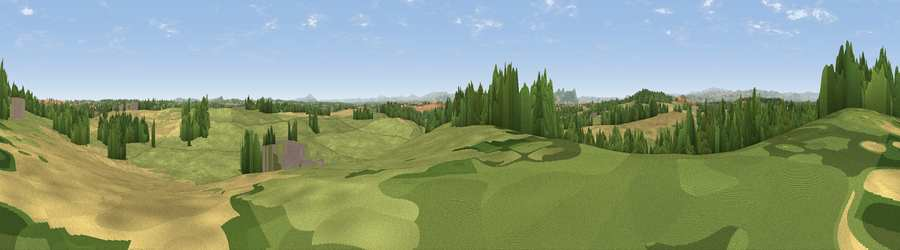

Viewpoint near Ruyton-XI-Towns
#20806 in England · top 75% of its area beats it · near Ruyton-XI-TownsThe view, rendered

A 360° render of this exact spot computed from the terrain model, tree cover and land cover — summer colours, afternoon light, calibrated against photographs of famous viewpoints. Real trees, hedges and buildings will differ in detail.
The panorama
Grey silhouette: terrain skyline in each direction (720 bearings, Earth curvature and refraction included). Dashed green: skyline with trees (+15 m) and buildings (+8 m) as obstacles. Blue strip: how far the ground is visible on each bearing.
Where the view opens
Wedge length = distance to the farthest visible ground on that bearing (vegetation-aware). Rings at 10, 25 and 50 km.
What fills the view
51% grassland · 26% cropland · 22% woodland ·
Angular shares of the visible panorama (visual magnitude), not map area. Landscape diversity 0.47 (0–1 Shannon).
Key numbers
More beautiful places nearby
The staircase of upgrades: each row has a higher view potential than everything closer. Driving times are estimates from straight-line distance, calibrated against real road routing — check an actual route before setting out.
| Place | Direction | Drive | Score |
|---|---|---|---|
| Stanwardine Park | N · 1 km | ~3 min | 59.0 |
| Grug Hill | W · 3 km | ~7 min | 68.3 |
| The Cliffe | SSW · 3 km | ~7 min | 69.2 |
| Oliver's Point | SSW · 4 km | ~9 min | 71.1 |
| Pim Hill | ESE · 9 km | ~17 min | 72.5 |
| Grinshill | E · 12 km | ~22 min | 75.2 |
| Viewpoint near Melverley | SW · 13 km | ~24 min | 78.2 |
| Viewpoint near Halfway House | SW · 14 km | ~25 min | 83.3 |
52.80549, -2.88888 · source: screening · position refined by local search. Computed location — check access rights before visiting.